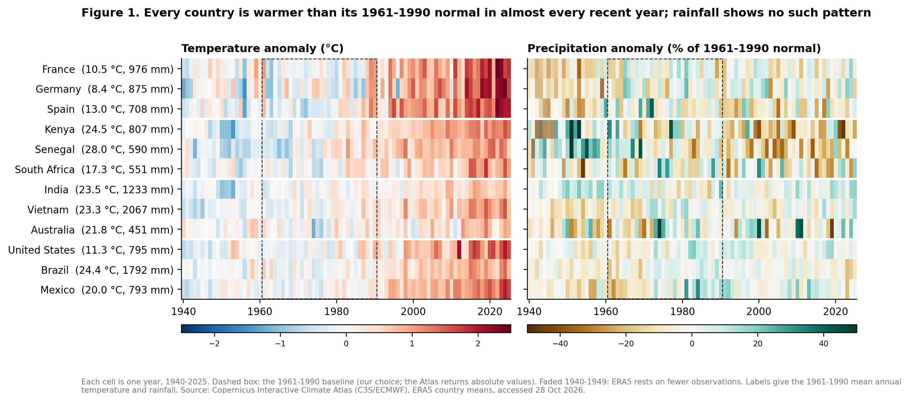
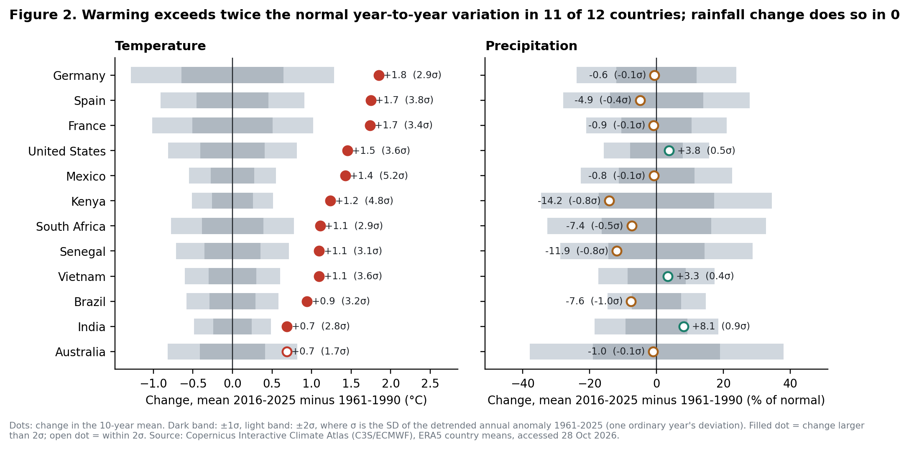
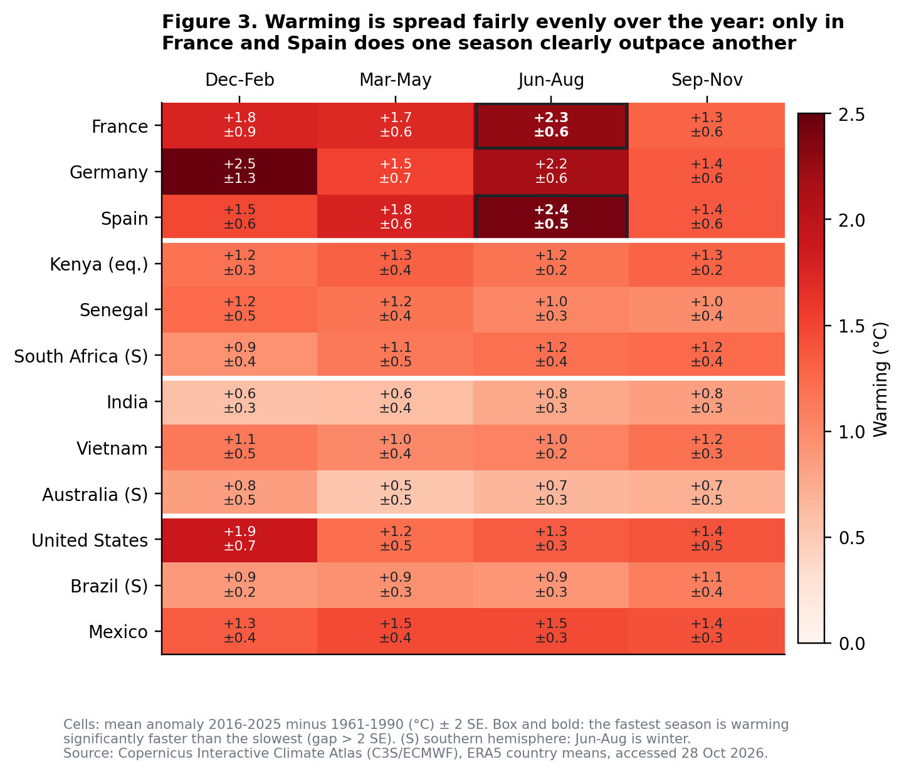
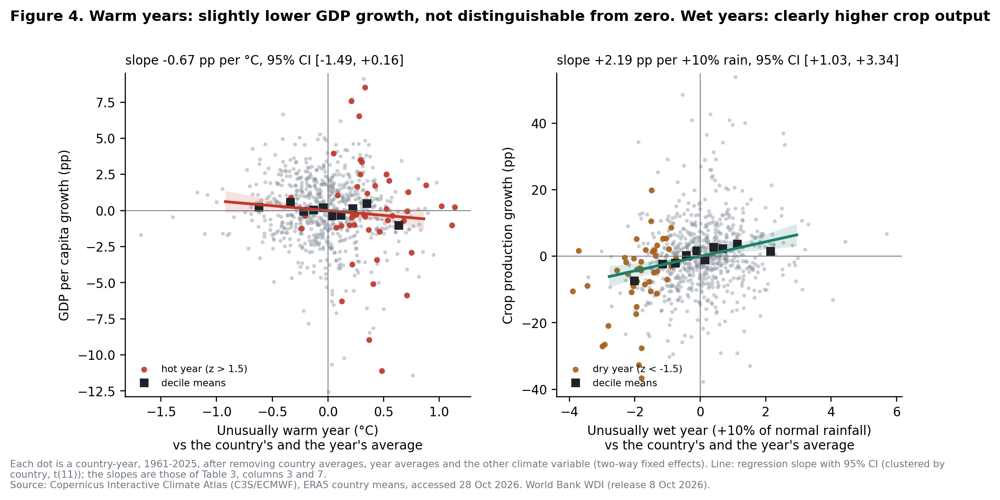
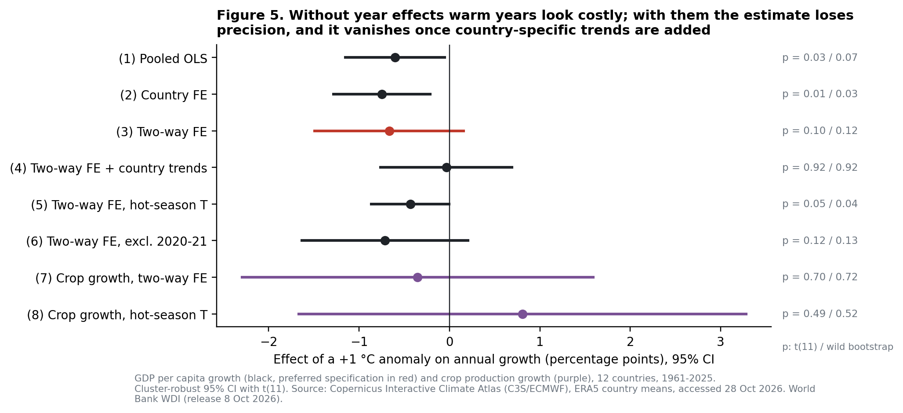
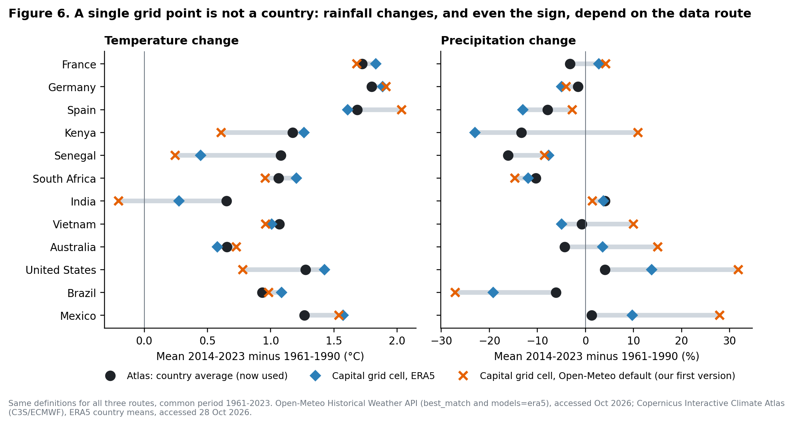

Environmental Economics, BSc AIDAMS, ESSEC, T1 2026–2027 · Track 1: Temperature and precipitation records
Authors: [names of the five group members] · Instructor: Caterina Seghini · Submitted: 2 November 2026
Code and data: https://github.com/Polluxgnr/Environemental-economics-
The Paris targets are written as one global number, but no farmer, firm or finance ministry lives in the global average. What each of them faces is the climate of its own country: how much warmer and wetter or drier it has become, and how that change compares with the ordinary swings from one year to the next. Those swings are what people already plan around. A shift smaller than the usual year-to-year noise is hard to perceive and easy to dismiss. A shift several times larger means the "normal" year of the 1970s no longer exists.
We ask four questions for twelve countries, three per continent, chosen to span temperate, Mediterranean, semi-arid, tropical and monsoon climates and very different economies:
An answer to (1)–(3) is a set of numbers, each with a measure of noise, which tells a reader whether a change is distinguishable from an ordinary year. An answer to (4) is a comparison of growth in climate-shock years with growth in other years, net of each country's average and of shocks common to all countries. The audience is anyone who has to read local climate statistics: a ministry setting adaptation priorities, an insurer, or a bank stress-testing physical risk.
Climate: Copernicus Interactive Climate Atlas (C3S/ECMWF).
The series are absolute values, not anomalies. We chose the baseline ourselves: 1961–1990, the WMO reference period, which is also the first 30 years for which our economic data exist. For each country and calendar month we subtract that month's 1961–1990 mean. Without this step the seasonal cycle dominates: in France it accounts for 92 % of the variance of monthly temperature. Precipitation anomalies are also expressed in % of the baseline month. Seasons are DJF, MAM, JJA and SON, with December counted in the following year's DJF.
Economy: World Bank World Development Indicators (release of 8 October 2026, accessed 28 October 2026). We use:
NY.GDP.PCAP.KD.ZG, %);AG.PRD.CROP.XD, 2014–2016 = 100), from which we compute annual crop growth;NV.AGR.TOTL.ZS, % of GDP).The two sources are matched on ISO country code and calendar year, and the match is exact: no climate year is lost. The losses are on the WDI side:
Missing values and limits. The Atlas series have no gaps. The limits that matter are these:
How much the data route matters. Our first version used the Open-Meteo API at one grid point per capital, and it did not specify the model, so it silently received a blend that is essentially ERA5-Land. Putting all three routes through identical definitions (Figure 6, Table A1 in the repository) gives a clear result:
Rainfall at one 10–30 km cell is not a country's rainfall. Everything below uses the Atlas country means.
Table 1. Change and noise by country (Atlas ERA5 country means, 1961–2025).
| Country | T 1961–90 (°C) | Trend (°C/dec) | ΔT 2016–25 (°C) | σT (°C) | ΔT/σT | P 1961–90 (mm) | Trend (%/dec) | ΔP 2016–25 (%) | σP (%) | ΔP/σP |
|---|---|---|---|---|---|---|---|---|---|---|
| France | 10.5 | +0.34 (0.04) | +1.74 | 0.51 | 3.4 | 976 | −0.4 (0.7) | −0.9 | 10.5 | −0.1 |
| Germany | 8.4 | +0.35 (0.04) | +1.85 | 0.64 | 2.9 | 875 | +0.2 (0.8) | −0.6 | 12.0 | −0.1 |
| Spain | 13.0 | +0.37 (0.04) | +1.75 | 0.46 | 3.8 | 708 | −1.8 (0.8)** | −4.9 | 13.9 | −0.4 |
| Kenya | 24.5 | +0.27 (0.01) | +1.24 | 0.26 | 4.8 | 807 | −3.4 (1.1)*** | −14.2 | 17.3 | −0.8 |
| Senegal | 28.0 | +0.26 (0.03) | +1.10 | 0.36 | 3.1 | 590 | −4.1 (1.1)*** | −11.9 | 14.4 | −0.8 |
| South Africa | 17.3 | +0.21 (0.03) | +1.11 | 0.39 | 2.9 | 551 | −1.1 (1.3) | −7.4 | 16.4 | −0.5 |
| India | 23.5 | +0.14 (0.02) | +0.69 | 0.24 | 2.8 | 1233 | +0.9 (0.7) | +8.1 | 9.3 | 0.9 |
| Vietnam | 23.3 | +0.22 (0.02) | +1.09 | 0.30 | 3.6 | 2067 | +0.5 (0.7) | +3.3 | 8.7 | 0.4 |
| Australia | 21.8 | +0.13 (0.03) | +0.69 | 0.41 | 1.7 | 451 | +0.7 (1.5) | −1.0 | 19.0 | −0.1 |
| United States | 11.3 | +0.29 (0.02) | +1.45 | 0.41 | 3.6 | 795 | +0.8 (0.7) | +3.8 | 7.9 | 0.5 |
| Brazil | 24.4 | +0.20 (0.03) | +0.94 | 0.29 | 3.2 | 1792 | −0.6 (0.8) | −7.6 | 7.4 | −1.0 |
| Mexico | 20.0 | +0.29 (0.02) | +1.43 | 0.27 | 5.2 | 793 | +1.5 (1.1) | −0.8 | 11.3 | −0.1 |
Notes.
Across countries, real GDP per capita grew 0.6–5.0 % a year on average, with an SD of 1.7–4.1 pp. Agriculture weighs 12–23 % of GDP in Kenya, Senegal, India and Vietnam (2016–2025), but under 3 % in France, Germany, Spain, Australia, the United States and South Africa.

Figure 1 shows the full record, the brief's step 1, as anomalies so that all countries share one scale. Every one of the 120 country-years from 2016 to 2025 was warmer than its 1961–1990 normal. Rainfall alternates between wet and dry years with no comparable drift. The levels behind these anomalies are in the row labels and in Figure A1 of the repository.

Figure 2 answers steps 3a and 3b. Warming since 1961–1990 ranges from +0.7 °C (India, Australia) to +1.85 °C (Germany). In 11 of 12 countries it is more than twice the year-to-year noise. Mexico's +1.4 °C is 5.2σ, because its temperature barely varies from year to year. Australia, at 1.7σ, is the one exception: its climate is so variable that +0.7 °C remains within the range of ordinary years. Rainfall change exceeds 2σ in none of the 12 countries. Linear trends say the same thing more weakly: three countries show significant drying (Kenya −3.4 %/decade, Senegal −4.1 %, Spain −1.8 %). Even there, the last decade lies within one σ of normal, so the answer depends on which years are compared. For the Sahel, the wet 1960s sit inside the baseline.
Does rainfall move where temperature moves? No. Across the 12 countries, the rank correlation between warming and rainfall change is 0.04. The fastest warmers, Germany, Spain and France, show almost no rainfall change. The largest rainfall changes are in Kenya (−14 %) and Senegal (−12 %), which warmed less.

Figure 3 is step 4, direction B: the shape of the change. Warming is broadly even across the year:
A summer-heavy warming in southern Europe matters economically: it falls when crop water demand and cooling demand peak.

Figure 4 is step 4, direction A: were unusual climate years unusual for the economy? Each country-year is plotted after removing the country's average and the year's average, so 2009 or 2020, bad everywhere, does not count against the climate.

Figure 5 shows how much the GDP answer depends on what is controlled for. Section 5 explains it.

Figure 6 shows why we use country means (Section 2).
The most extreme years (Table 5 in the repository) make the same point concretely:
In 9 of the 12 hottest seasons on record, crop growth was more than 5 pp below normal, while GDP fell below normal in only half of them. India 2010 and Mexico 1980 are counter-examples where both rose.
We estimate panel regressions by OLS with fixed effects:
Table 3. Growth on climate anomalies, 12 countries, 1961–2025 (cluster SE in parentheses).
| Model | Temperature β (pp per °C) | 95 % CI | p, t(11) | p, wild bootstrap | 1-SD warm year (pp) | Precip. (+10 %) |
|---|---|---|---|---|---|---|
| (1) Pooled OLS | −0.60 (0.25) | [−1.15, −0.05] | 0.034 | 0.068 | −0.23 | +0.03 (0.10) |
| (2) Country FE | −0.75 (0.24) | [−1.28, −0.21] | 0.011 | 0.031 | −0.28 | −0.06 (0.11) |
| (3) Two-way FE (preferred) | −0.67 (0.37) | [−1.49, +0.16] | 0.103 | 0.118 | −0.25 | −0.03 (0.11) |
| (4) Two-way FE + country trends | −0.04 (0.33) | [−0.76, +0.69] | 0.917 | 0.924 | −0.01 | +0.08 (0.08) |
| (5) Two-way FE, hot-season T | −0.43 (0.20) | [−0.87, −0.00] | 0.049 | 0.037 | −0.24 | −0.02 (0.10) |
| (6) Two-way FE, excl. 2020–21 | −0.71 (0.42) | [−1.63, +0.21] | 0.116 | 0.132 | −0.27 | −0.05 (0.12) |
| (7) Crop growth, two-way FE | −0.35 (0.88) | [−2.29, +1.59] | 0.698 | 0.721 | −0.13 | +2.19 (0.52), p = 0.002 |
| (8) Crop growth, hot-season T | +0.81 (1.12) | [−1.67, +3.28] | 0.488 | 0.522 | +0.45 | +2.33 (0.63), p = 0.004 |
Notes.
Interpretation.
Method and type of result.
Year-to-year weather is plausibly unrelated to what the economy would have done anyway, which makes the two-way fixed-effects design close to a natural experiment. Even so, we do not claim a causal effect on GDP:
What the results would need in order to be causal: many more countries or sub-national units (regions, districts), so that standard errors shrink; weather measured where economic activity takes place, for example cropland- or population-weighted; and an exposure channel fixed in advance, such as agriculture's share or heat-sensitive labour, rather than chosen after looking at the data.
Weather is not climate change. Our design measures the response to one unusual year. A permanent shift allows adaptation (irrigation, crop choice, air conditioning) but also accumulates damage (soil, water tables, capital). The literature disagrees on which dominates: Burke, Hsiang & Miguel (2015) find a non-linear effect of temperature levels; Kahn et al. (2021) find that persistent deviations from historical norms, which is what our anomalies measure, lower long-run growth. In the IPCC's language of hazard, exposure and vulnerability (IPCC, 2014), our climate series measure the hazard. They become economic losses only through exposure, and agriculture is a small share of GDP in most of our countries. That is consistent with our clearest economic finding: shocks show up in crops long before they show up in GDP.
Our position. The warming in these records is unambiguous and large relative to what people have experienced as normal. The rainfall signal is weak, and it is fragile to how rainfall is measured. A single year's heat leaves little trace in national GDP, while drought leaves a large one in harvests. For policy, the relevant exposure is sectoral and regional, not national.
Data.
t and pr, monthly 1940–2025, https://atlas.climate.copernicus.eu, accessed 28 October 2026.best_match model and models=era5), capital grid points, accessed 12 and 27 October 2026 (comparison only).AI use. [To be completed by the group, naming every tool. For example: AI coding assistants (name them) were used to write and debug the download and analysis scripts, to reverse-engineer the Atlas download requests, to draft figure code and parts of the text, and to audit the first version of the project. All numbers were produced by the code in the repository from the raw data; the authors checked them and can explain each one.]
Reproducibility. Running pip install -r requirements.txt then scripts/00_… to scripts/06_… in order rebuilds every table and figure. The raw downloads are included in data/raw/, and data/README.md gives every source, access date and the manual Atlas click-path.